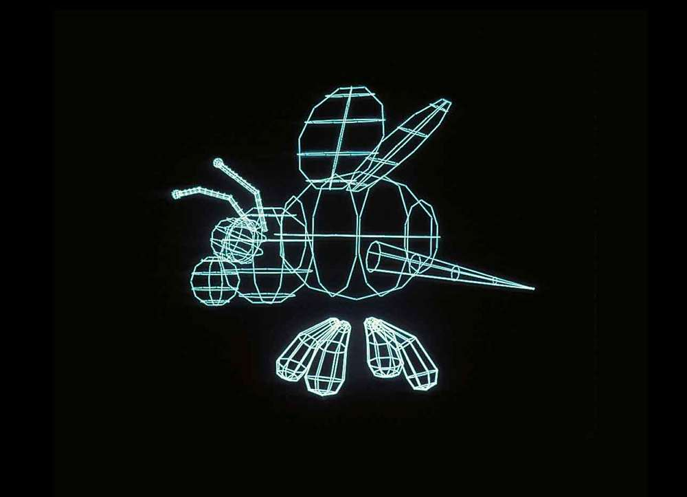
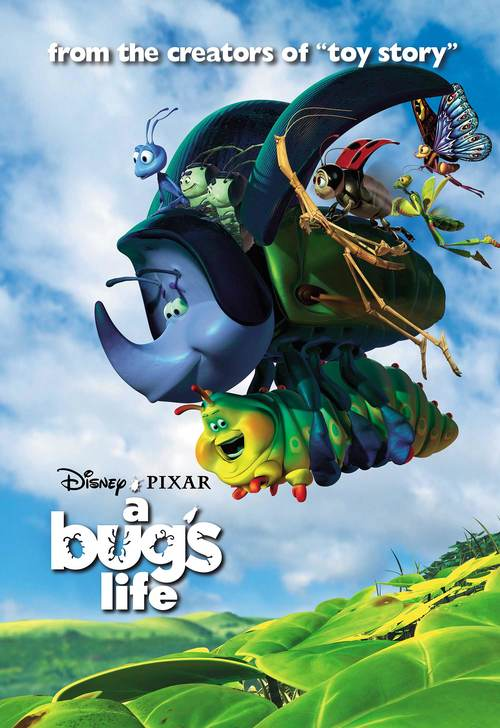
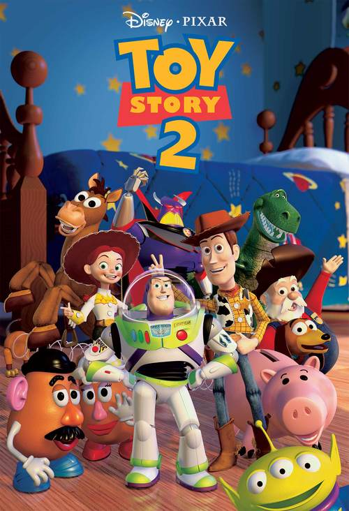
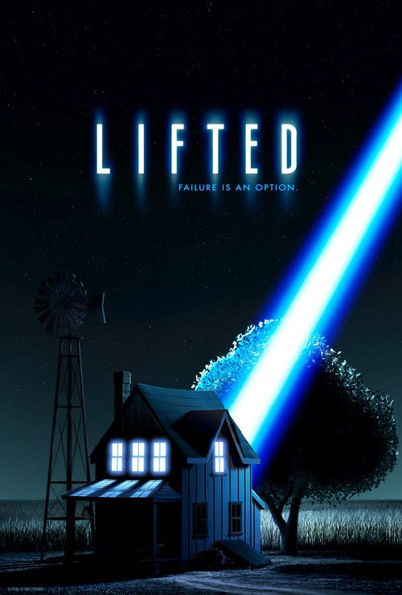
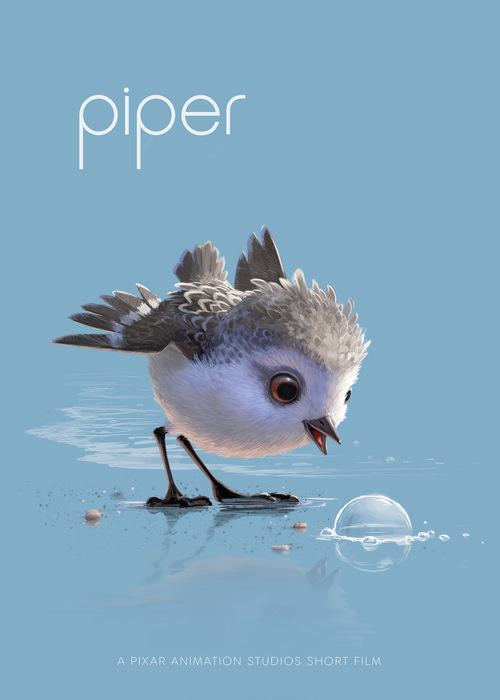

George Lucas recruits Ed Catmull from the New York Institute of Technology to head Lucasfilm’s Computer liision, a group charged with developing state-of-the-art computer technology for the film industry. Lucas’s wish list: a digital (nonlinear) film editing system, a digital (nonlinear) sound editing system, a laser film printer, and further exploration of computer graphics.

The Computer liision completes the “Genesis Effect” sequence for Star Trek II: The Wrath of Khan. The scene, which shows an initially lifeless planet being rapidly transformed by lush vegetation, is the first completely computer animated sequence in a feature film.
The Computer liision’s Graphics Group creates their first film-resolution image, “The Road to Point Reyes.” Near the end of the year, animator John Lasseter is invited to come up to the Bay Area to do some freelance work with the Graphics Group.
Lasseter is hired full-time, joining the Computer liision as an “Interface Designer.”
A partially completed version of “The Adventures of André & Wally B.” premieres at SIGGRAPH. It is the first short film created by the future animation studio, featuring complex flexible characters, hand-painted textures, and motion blur. It is also the first example of character animation in the young medium of computer animation.
At SIGGRAPH, the Computer liision also shows off its prototype Pixar Image Computer.

The Computer liision completes the Stained Glass Knight sequence that appears in the film Young Sherlock Holmes.
Steve Jobs purchases the Computer Division from George Lucas and establishes the group as an independent company, “Pixar.” At this time about 40 people are employed.
Pixar and Disney begin collaboration on CAPS, the Computer Animation Production System, which would revolutionize the creation of traditional animated films. The first check written to Pixar by a client after its incorporation is from Disney, for work on this project.
“Luxo Jr.” is completed. The short film, John Lasseter’s official directorial debut, is unveiled in August at SIGGRAPH and then screened for general audiences at Los Angeles-area theaters in November. “Luxo Jr.” will go on to become the first three-dimensional computer animated film to be nominated for an Oscar®, receiving a nomination for
Best Short Film (Animated).
“Red’s Dream” is completed and premieres at SIGGRAPH. A portion of the film is rendered entirely on the Pixar Image Computer
Pixar’s proprietary animation system, identified to the outside world as Marionette but internally known as Menv (“men-vee”), short for “modeling environment,” comes online.
Pixar’s proprietary renderer, RenderMan®, also makes its internal debut.
Both pieces of software are used to produce “Tin Toy,” Pixar’s third short film. A partially completed version of
“Tin Toy” is screened at SIGGRAPH, with the finished film premiering later that year at the Ottawa International Film Fest. “Tin Toy” will go on to become the first computer animated film to receive an Academy Award® when it is named Best Short Film (Animated) the following year.
“Knick Knack” is completed. A work-in-progress version is screened at that year’s SIGGRAPH. It is Pixar’s first animation produced
in stereoscopic 3D.
The first commercial version of RenderMan®
is released.
Pixar begins making commercials. The first is an ad for Tropicana orange juice, “Wake Up,” directed by John Lasseter.
Andrew Stanton and Pete Docter join the company. By the end of the year, each animates a commercial – Andrew Stanton completes “Quite A Package” for Trident, and Pete Docter animates “Boxer” for Listerine. Pixar’s commercial work gives the company invaluable experience in pitching, storytelling, and working with clients, and allows it to develop and refine its production pipeline.
Disney and Pixar announce an agreement “to make and distribute at least one computer-generated animated movie.” Pixar begins work on the project that will become Toy Story, while continuing to produce commercials and other short materials, including spots for public television.

Toy Story, the world’s first computer animated feature film, is released in theaters on November 22. It opens at #1 that weekend and will go on to become the highest grossing film of the year, making $192 million domestically and $362 million worldwide.
Pixar’s initial public offering takes place just days later, on November 28. It is the largest IPO of the year.
Toy Story is recognized with Academy Award® nominations for Best Original Song, Best Original Score, and Best Original Screenplay—the first time an animated film is recognized for screenwriting. John Lasseter receives a Special Achievement Oscar® from the Academy of Motion Picture Arts and Sciences for his “inspired leadership of the Pixar Toy Story Team resulting in the first feature-length computer animated film.”
Pixar announces that it will stop making commercials in order to concentrate on longer-format and interactive entertainment.
The Walt Disney Studios and Pixar Animation Studios announce an agreement to jointly produce five movies over 10 years.
Groundbreaking for Pixar’s Emeryville studio begins.
"A Bug's Life" is released in theaters on November 25, accompanied by the short film “Geri’s Game.”

Toy Story 2 is released in theaters on November 24. It is the first film in history to be entirely created, mastered and exhibited digitally. It is accompanied by a rerelease of “Luxo Jr.”

Pixar moves to its new building in Emeryville, California.
Monsters, Inc. is released in theaters on November 2, accompanied by the short film “For the Birds.”
“A Bug's Land”, a themed land based on A Bug’s Life, opens at Disney California Adventure Park.
Finding Nemo is released in theaters on May 30, accompanied by a re-mastered version of “Knick Knack.”
The Incredibles is released in theaters on November 5, accompanied by the short film “Boundin’.”
“Turtle Talk with Crush” opens at Epcot in the
Walt Disney World Resort.
Pixar’s first external exhibition of original artwork, Pixar: 20 Years of Animation, opens at the Museum of Modern Art in New York.
Cars is released in theaters on June 9, accompanied by the short film “One Man Band.”
The late story artist Joe Ranft is named a Disney Legend.
The Walt Disney Company announces that it has agreed to purchase Pixar Animation Studios. As part of the deal,
Ed Catmull and John Lasseter also assume leadership of Walt Disney Animation Studios.
Pixar celebrates its 20th anniversary.
Ratatouille is released in theaters on June 29, accompanied by the short film “Lifted.”

"Finding Nemo Submarine Voyage” opens in Tomorrowland at Disneyland Park in California.
WALL•E is released in theaters on June 27, accompanied by the short film “Presto.”
Up becomes the first animated feature film to open the Cannes Film Festival. It opens in wide release on May 29 with the short film “Partly Cloudy.”
"Monsters, Inc. Ride & Go Seek" opens at Tokyo Disneyland
Toy Story 3 is released in theaters on June 18, accompanied by the short film “Day and Night.”
“Toy Story Playland,” a themed land based on the Toy Story films, opens at Walt Disney Studios Park at Disneyland Paris.
Cars 2 is released in theaters on June 24, accompanied by the first Toy Story Toon, “Hawaiian Vacation.”
Pixar celebrates its 25th anniversary.
Construction of the second new building on Pixar’s Emeryville campus is completed.
“Toy Story Land” opens at Hong Kong Disneyland.
Brave is released in theaters on June 22, accompanied by the short film “La Luna.”
"Cars Land" opens at Disney California Adventure Park.
Menv (“men-vee”), Pixar’s long-lived proprietary animation system, is officially retired in favor of a completely new proprietary system named Presto, after the studio’s 2008 short film. Brave is the first film animated using this new system—which is still referred to internally as “menv.”
Pixar, in partnership with the San Francisco Symphony, launches "Pixar in Concert", a symphonic rendition of the scores of Pixar films.
Monsters University is released in theaters on June 21, accompanied by the short film “The Blue Umbrella.”
The TV special "Toy Story Of TERROR!" airs on ABC.
The holiday TV special "Toy Story That Time Forgot" airs on ABC.
"Ratatouille: The Adventure" opens in Walt Disney Studios Park at Disneyland Paris.
After premiering at the 68th Cannes Film Festival in May, Inside Out is released on June 19, accompanied by the short film “LAVA.”
The Good Dinosaur, accompanied by the short film “Sanjay's Super Team,” is released in theatres on November 25.

Pixar releases its Academy Award®-winning RenderMan® software for non-commercial use. Online educational program Pixar in a Box is released in partnership with Khan Academy. The Science Behind Pixar exhibit opens at the Museum of Science, Boston.
Finding Dory, accompanied by the short film “Piper,” is released in theatres on June 17.
